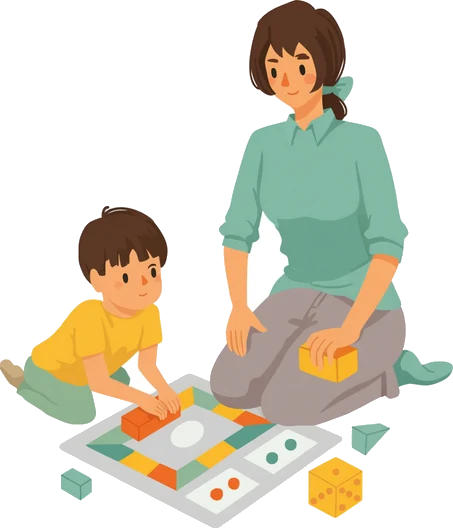

CS-01ECEC educator onboarding
Safeguarding the Start
A 30-day phased induction that gets graduate educators ready for their first day counted in ratio, built around a branching transition scenario in a toddler room.
StoryboardJob aidCourse